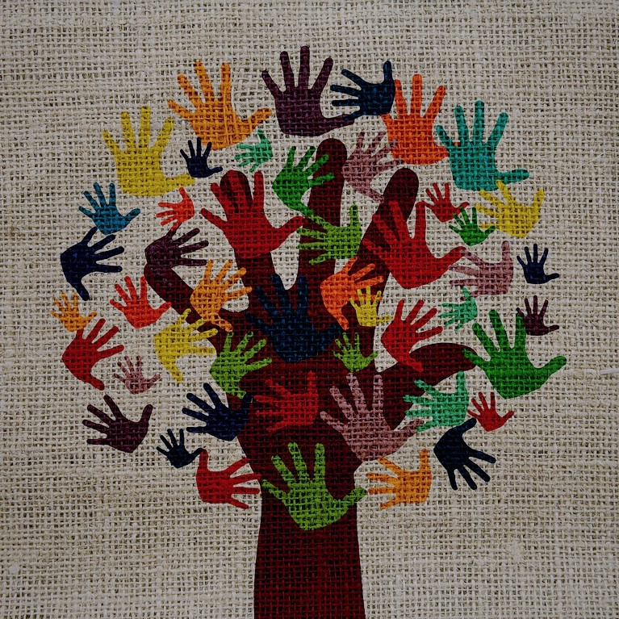

About Museum
Our Mission
The mission of the SDSU Natural History Museum is to interpret the natural world through research, education and exhibits; to promote understanding of the evolution and diversity of southern California and the peninsula of Baja California; to train and grow our future leaders in research and conservation; and to inspire in all a respect for nature and the environment.

The most popular natural history museum is dedicated to understanding the natural world and our place in it. Delve into the fascinating story of our planet, from its fiery beginnings through billions of years of transformation, and explore life on Earth through exhibitions and activities, collection objects and research that happens in the lab and in the field.
At the center of the Museum’s exhibition and research programs are its expertly documented collections: more than 126 million natural science specimens and cultural artifacts. Just to name a few of our museum holdings, the collections include 30 million insects carefully pinned into tiny boxes; 4½ million plants pressed onto sheets of paper in the Museum’s herbarium; 7 million fish in liquid-filled jars; and 2 million cultural artifacts, including 400,000 photographs housed in the National Anthropological Archives. Over 3½ million specimens are out on loan each year; over 15,000 visitor days are spent in the collections; and there are almost 600,000 additional visits to collection data bases available on the Web.
Our Purpose
Our purpose is to emphasize this unique and diverse region while maintaining a global perspective; to collect and preserve scientific specimens for research and as a continuous record of the changing world for future generations; to serve as a center for the scientific study of biological diversity and evolution; to provide dynamic leadership in natural history and environmental education through exhibits, publications, and educational programs, striving to make this outreach relevant to all the people of the San Diego region; to foster cooperative efforts in natural history research and education throughout our region.
We believe the San Diego State University Natural History Museum will be the premier collections-based environmental education and natural history research resource in our region. We will provide programs that are timely, user-friendly, and relevant to the real-life needs of the diverse populations of the San Diego-Baja California region today and tomorrow. We will train the researchers that will bring our history into the future.
Founded in 1954, the San Diego State University Natural History Society was established to document and preserve the rich history and natural resources of the Southern California and the Baja region. In its initial years, the Society supported the region's scientific culture, serving a small but growing community eager for information about its natural resources. Since its formation society members have established a campus weather station, served as preservation volunteers for Torrey Pines State Reserve, Batiquitos Lagoon Foundation Nature Center, Anza-Borrego Desert State Park and other nature preserves in the region, and garnered support for the San Diego Zoological Society. The Society's crowning accomplishment is the creation of the San Diego State University Natural History Museum, the only university affiliated Natural History Museum in the south west.